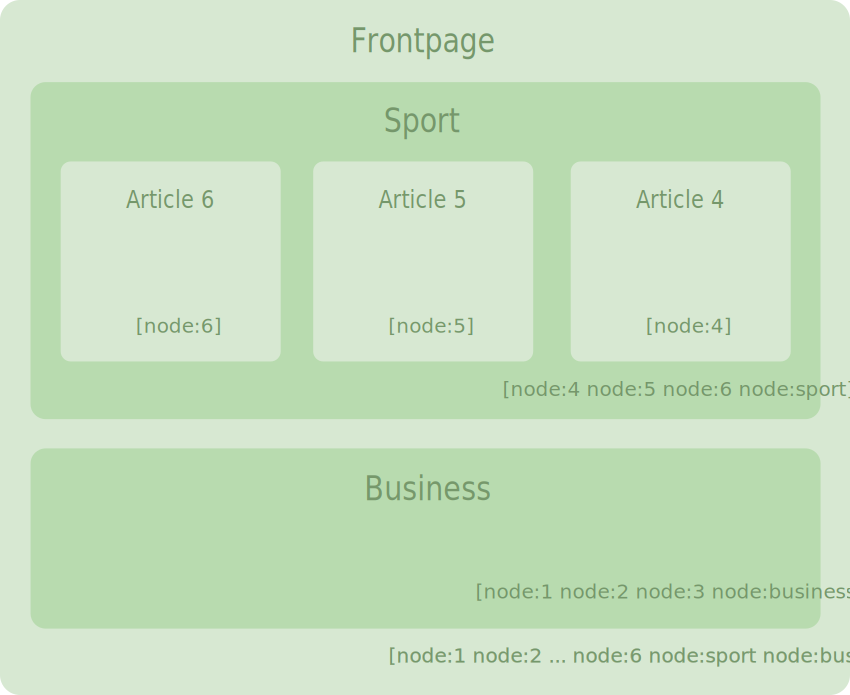
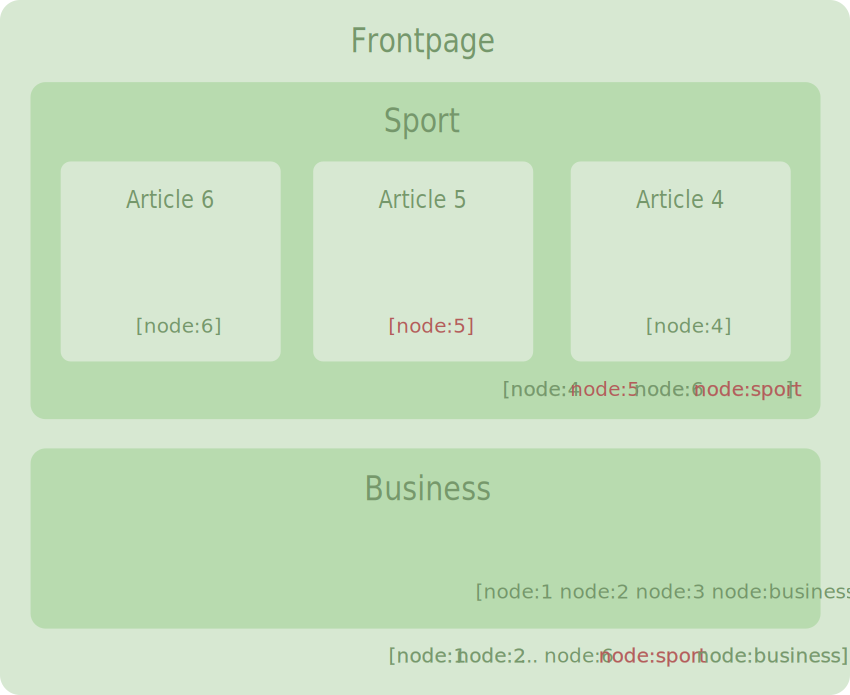
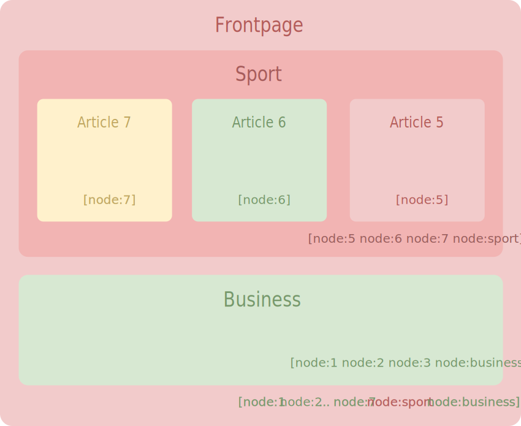

Proudly found elsewhere
Contrairement à Drupal 7 le cache est activé par défaut dans Drupal8.
Il est vivement conseiller de le désactiver en mode développement
Il suffit de décommenter les lignes suivantes du settings.php
if (file_exists(__DIR__ . '/settings.local.php')) {
include __DIR__ . '/settings.local.php';
}Le premier cache est celui du navigateur
Pour les ressources (img, css, ...) le réglage s'effectue dans le .htaccess
# Requires mod_expires to be enabled.
# Enable expirations.
ExpiresActive On
# Cache all files for 2 weeks after access (A).
ExpiresDefault A1209600
# Do not allow PHP scripts to be cached unless they explicitly
# send cache headers themselves(...)
ExpiresActive Off
Proxy serveurs mandataire
CDN Content Delivery Network (Akamaï, Level5, ...)
Varnish :
Internal Page CacheDésactiver le cache et activer les options de débogage.
settings.local.php
$settings['container_yamls'][] = DRUPAL_ROOT . '/sites/development.services.yml';
$config['system.logging']['error_level'] = 'verbose';
$config['system.performance']['css']['preprocess'] = FALSE;
$config['system.performance']['js']['preprocess'] = FALSE;
# $settings['cache']['bins']['render'] = 'cache.backend.null';
# $settings['cache']['bins']['dynamic_page_cache'] = 'cache.backend.null';development.services.yml
parameters:
http.response.debug_cacheability_headers: true
services:
cache.backend.null:
class: Drupal\Core\Cache\NullBackendFactory
http.response.debug_cacheability_headers permet de faire apparaître les headers HTTP
X-Drupal- très utiles pour le débogage du cache Drupal.
Avec drupal console : drupal site:mode dev (https://www.drupal.org/node/2598914)
Mais surtout :
N'oubliez de réactiver les caches avant de tester votre dev...
Internal Page CacheVoici une page composé de deux blocs avec chacun un liste de noeuds.
Modification du node 5 et création du node 7 (en rouge les méta-données invalidées)
En rouge les contenus recalculés :
Pour empêcher les éléments très dynamiques d'invalider systématiquement le cache de page, ceux-ci sont remplacés par des placeholders, en toute fin de rendu ils sont substitués par le contenu du callback.
https://www.drupal.org/docs/8/api/render-api/auto-placeholdering
Il peut être défini avec le paramètre #lazy_builder
// Callback : class:method ou (mieux) service:method
return [
'#lazy_builder' => ['hello_world.lazy_builder:renderSalutation', []],
'#create_placeholder' => TRUE,
];
ou être détecté automatique en fonction des condition suivantes (par defaut) :
# Conditions pour être "autoplaceholderer"
renderer.config:
auto_placeholder_conditions:
max-age: 0
contexts: ['session', 'user']
tags: []Les éléments utilisés par le "cache dynamique de page" sont bien entendu les "render array" Drupal.
La plupart ont des méta-données de cache (clé #cache) dont les parents héritent :
Ces métas-données s'agrègent donc jusqu'à la page et ses headers
Module renderviz : pour le débogage en profondeur des méta-données de cache.
Gérer les méta-données d'une Render Array
$config = \Drupal::config('system.site');
$current_user = \Drupal::currentUser();
$build = [
'#markup' => t('Salut, %name, bienvenu sur @site!', [
'%name' => $current_user->getUsername(),
'@site' => $config->get('name'),
]),
'#cache' => [
'contexts' => [
'user', // Sera traiter en #lazybuilding
],
'tags' => $config->getCacheTags(), // ou addCacheableDependency()
],
];
// Autre moyen d'ajouter une dépendance de cache.
$renderer = \Drupal::service('renderer');
$renderer->addCacheableDependency(
$build,
\Drupal\user\Entity\User::load($current_user->id())
);
// Fusionner des cache tags
$tags = Cache::mergeTags($conf_one->getCacheTags(),$conf_two->getCacheTags());
Fonctionne avec les annotation context (typiquement dans la définition d'un block)
* context = {
* "node" = @ContextDefinition("entity:node", label = @Translation("Node"))
* }
Les plugin (et donc les blocs) implémentent
CacheableDependencyInterface et donc des méthodes pour initialiser les méta-données de cache.
\Drupal\Core\Plugin\ContextAwarePluginBase::getCacheContexts()
public function getCacheContexts() {
return Cache::mergeContexts(parent::getCacheContexts(), ['user.node_grants:view']);
}
public function getCacheTags() {
return Cache::mergeTags(parent::getCacheTags(), ['node_list']);
}
public function getCacheMaxAge() {
return 0;
}content, dans le fichier Twig du contenu, car c'est lui qui porte les méta-données de cache, voir :Utilisateurs, sites-builders, pas de panique :
Drupal gère le cache tout seul !
Développeurs de tous horizons, voici comment l'utiliser :
Get / Set
function mes_donnees_metier();
// Ma clé
$key = 'mon_module' . ':' . __FUNCTION__ . ':' .
\Drupal::languageManager()->getCurrentLanguage()->getId();
// Est-ce que le cache existe ?
if ($cache = \Drupal::cache()->get($key)) {
$data = $cache->data;
}
// Pas de cache : on traite les données et
// on les stocke dans le cache.
else {
$data = mon_traitement_metier_super_lent();
\Drupal::cache()->set($key, $data);
}
return $data;
}Duration
// Possible de préciser une durée de validité (timestamp)
\Drupal::cache()->set($key, $data, REQUEST_TIME + 600);
Tags
// Associer des tags
\Drupal::cache()->set(
$key,
$data,
Cache::PERMANENT,
[
'tag1',
'node:1',
'config:system.menu',
'config:mon_module',
]
);// Découvrir les tags des entités :
$node->getCacheTags();
$entity_type->getListCacheTags(); //EntityTypeInterface
\Drupal\views\Entity\View::load('front')->getCacheTags();
;Suppression / Invalidation
// Suppression du cache (rapide)
\Drupal::cache()->delete('mon_module:donnees_caches');
\Drupal::cache()->deleteMultiple([
'mon_module:cle1',
'mon_module:cle2',
...
]);
\Drupal::cache()->deleteAll();
// Invalidation : non conseillé (Berdir)
// Invalidation de tag (incrémentation du compteur d'invalidation)
$cache_tag_invalidator->invalidateTags(['my_tag']);
Cache::invalidateTags(['my_tag']);
À l'enregistrement d'un cache on stocke de la somme des compteurs d'invalidation des tags concernés.
À l'appel du cache on recalcule ce checksum, s'il diffère le cache est régénéré.
Multiples
\Drupal::cache()->getMultiple($keys);
\Drupal::cache()->setMultiple($items);Utiliser du cache périmé (pour faire patienter)
$cache = \Drupal::cache()->get('my-key', TRUE);
if ($cache && $cache->valid) {
return $cache->data;
}
elseif (\Drupal::lock()->acquire('my-key')) {
// Rebuild and set new data.
}
elseif ($cache) {
// Someone else is rebuilding, work with stale data.
return $cache->data;
}
else {
// Wait or rebuild.
}Il y a différents "bacs" (bin) de cache :
On peut créer son propre "bin". On peut associer un backend différent à chaque "bin".
Méthode de stockage d'un bin.
core/core.services.yml :
cache.backend.memcache_storagecache.backend.redisLe ChainedFast Backend (cache.backend.chainedfast) permet de chaîner un backend rapide au-dessus d'un backend lent.
* Depuis la 8.4 la taille des tables de cache n'est plus infinie.